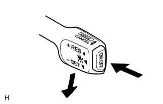
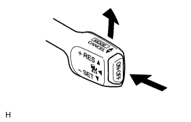
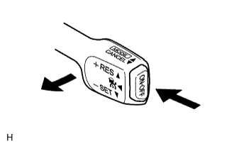

ДИНАМИЧЕСКАЯ РАДАРНАЯ СИСТЕМА КРУИЗ-КОНТРОЛЯ > ДОРОЖНОЕ ИСПЫТАНИЕ |
| ПРОВЕРЬТЕ ВЫКЛЮЧАТЕЛЬ SET |
|  |
Включите выключатель круиз-контроля.
Убедитесь в том, что на щитке приборов горит контрольная лампа круиз-контроля.
Совершите поездку на автомобиле с требуемой скоростью (в диапазоне от 50 до 170 км/час [от 30 до 105 миль в час]).
Отожмите выключатель круиз-контроля в положение -SET.
Убедитесь в том, что на щитке приборов горит контрольная лампа круиз-контроля SET.
Отпустите выключатель и убедитесь, что автомобиль движется с требуемой скоростью.
| ПРОВЕРЬТЕ ВЫКЛЮЧАТЕЛЬ "+" |
|  |
Включите выключатель круиз-контроля.
Совершите поездку на автомобиле с требуемой скоростью (в диапазоне от 50 до 170 км/час [от 30 до 105 миль в час]).
Отожмите выключатель круиз-контроля в положение -SET.
Убедитесь, что при установке переключателя круиз-контроля в положение +RES скорость автомобиля возрастает, а после отпускания переключателя автомобиль движется с заданной скоростью.
Режим поддержания заданной скорости:
Кратковременно отожмите выключатель круиз-контроля вверх в положение +RES и сразу же отпустите его. Убедитесь, что скорость автомобиля возросла приблизительно на 1,6 км/час (1 миля в час) (функция повышения).
Режим управления дистанцией между автомобилями (модели для Европы):
Кратковременно отожмите выключатель круиз-контроля вверх в положение +RES и сразу же отпустите его. Убедитесь, что скорость автомобиля возросла приблизительно на 5 км/час (5 миль в час) (функция повышения).
Режим контроля дистанции между автомобилями (кроме моделей для Европы):
Кратковременно отожмите выключатель круиз-контроля вверх в положение +RES и сразу же отпустите его. Убедитесь, что скорость автомобиля возросла приблизительно на 1 км/час (1 милю в час) (функция повышения).
| ПРОВЕРЬТЕ ВЫКЛЮЧАТЕЛЬ "-" |
Включите выключатель круиз-контроля.
Совершите поездку на автомобиле с требуемой скоростью (в диапазоне от 50 до 170 км/час [от 30 до 105 миль в час]).
Отожмите выключатель круиз-контроля в положение -SET.
Убедитесь, что скорость автомобиля уменьшается при переключении выключателя круиз-контроля в положение -SET, и автомобиль движется с требуемой скоростью после того, как выключатель отпущен.
Режим поддержания заданной скорости:
Кратковременно отожмите выключатель круиз-контроля вниз в положение -SET и сразу же отпустите его. Убедитесь, что скорость автомобиля уменьшается приблизительно на 1,6 км/час (1 миля в час) (функция понижения).
Режим управления дистанцией между автомобилями (модели для Европы):
Кратковременно отожмите выключатель круиз-контроля вниз в положение -SET и сразу же отпустите его. Убедитесь, что скорость автомобиля уменьшается приблизительно на 5 км/час (5 миль в час) (функция понижения).
Режим контроля дистанции между автомобилями (кроме моделей для Европы):
Кратковременно отожмите выключатель круиз-контроля вниз в положение -SET и сразу же отпустите его. Убедитесь, что скорость автомобиля уменьшается приблизительно на 1 км/час (1 милю в час) (функция понижения).
| ПРОВЕРЬТЕ ФУНКЦИЮ ОТМЕНЫ (ВЫКЛЮЧАТЕЛЬ CANCEL) |
|  |
Включите выключатель круиз-контроля.
Совершите поездку на автомобиле с требуемой скоростью (в диапазоне от 50 до 170 км/час [от 30 до 105 миль в час]).
Отожмите выключатель круиз-контроля в положение -SET.
При выполнении одной из следующих операций убедитесь, что система круиз-контроля отключается и устанавливается обычный режим вождения:
| ПРОВЕРЬТЕ ВЫКЛЮЧАТЕЛЬ RES (RESUME) |
Включите выключатель круиз-контроля.
Совершите поездку на автомобиле с требуемой скоростью (в диапазоне от 50 до 170 км/час [от 30 до 105 миль в час]).
Отожмите выключатель круиз-контроля в положение -SET.
Отключите систему круиз-контроля, выполнив одно из следующих действий:
После установки контрольного выключателя в положение +RES при движении на скорости свыше 40 км/час (25 миль в час) убедитесь, что скорость автомобиля восстанавливается до уровня, который поддерживался до отключения.